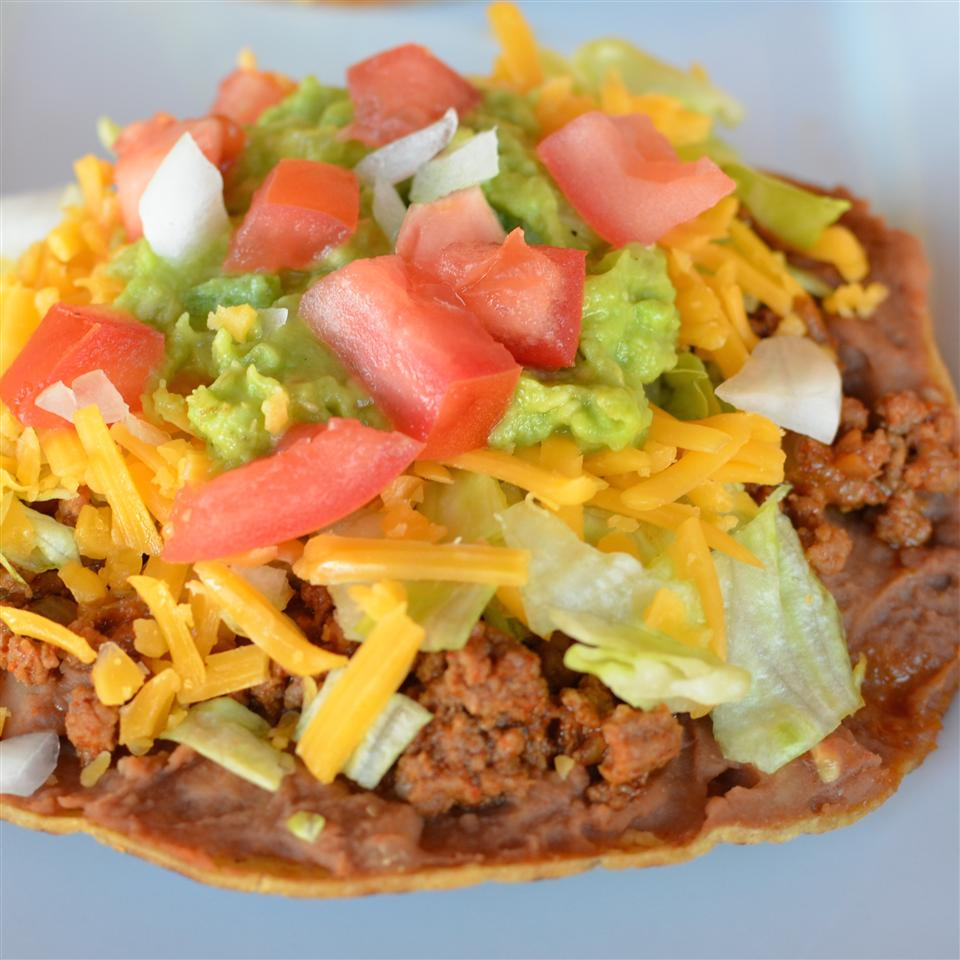

Crispy Oven Beef-and-Bean Tostadas

Description
A healthier way to make tostadas and better tasting. The simple secret to making crispy tostadas is baking the
corn tortillas instead of frying.
Ingredients
- ½ teaspoon garlic salt
- ½ teaspoon onion powder
- ½ teaspoon garlic powder
- 6 corn tortillas
- 2 tablespoons vegetable oil
- 2 cups refried beans
- 2 cups shredded lettuce, or as desired
- 1 ½ cups shredded Cheddar cheese
How to prepare
- Preheat oven to 400 degrees F (200 degrees C).
- Mix garlic salt, onion powder, garlic powder, cumin, and black pepper together in a small bowl.
- Brush oil over both sides of tortillas and arrange on a baking sheet.
- Bake tortillas in preheated oven until crisped on top, about 5 minutes. Flip tortillas and continue baking
until other side crisps, 2 to 3 minutes more.
- Heat refried beans in a saucepan over medium-low, stirring regularly until hot, about 5 minutes (see Cook's
Note).
- Divide refried beans between tostadas and spread over one side of each; spoon ground beef mixture over the
beans. Top each tostada with lettuce, Cheddar cheese, and diced tomato.